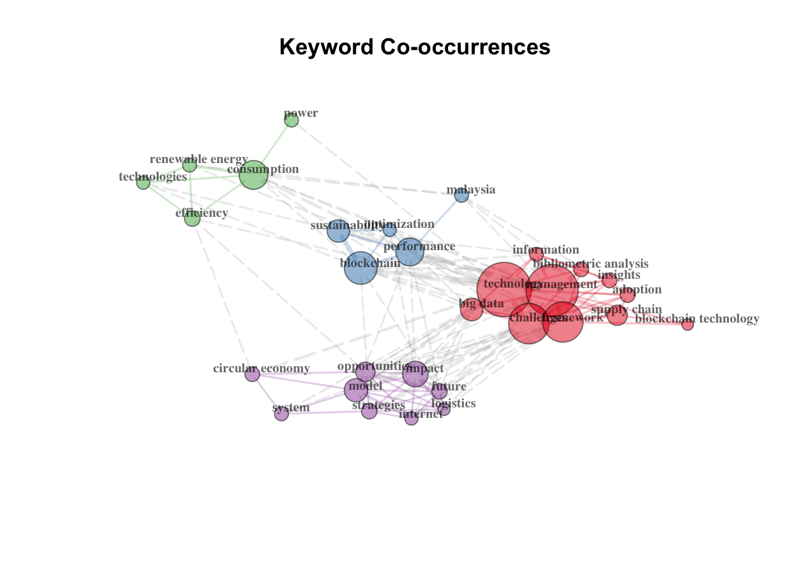
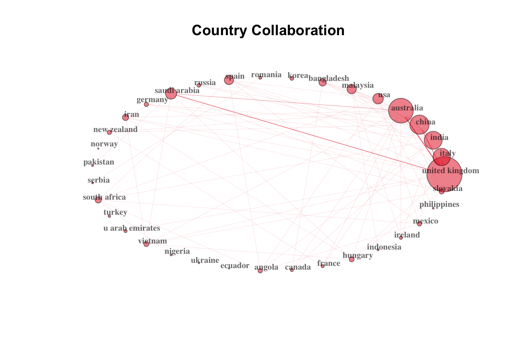
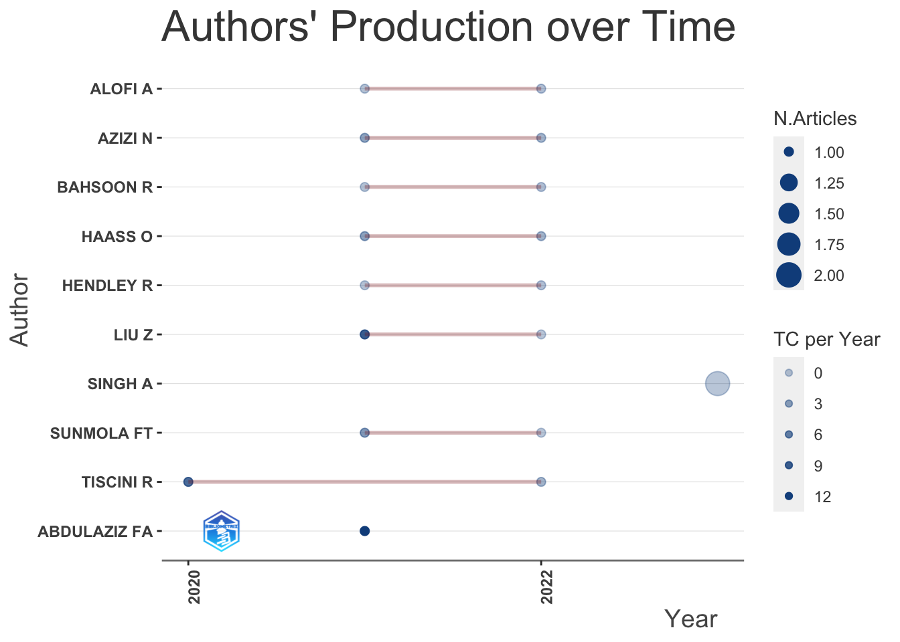
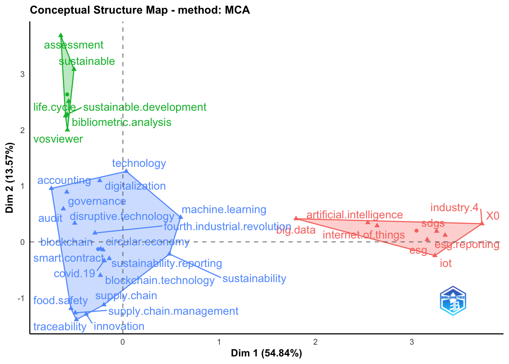
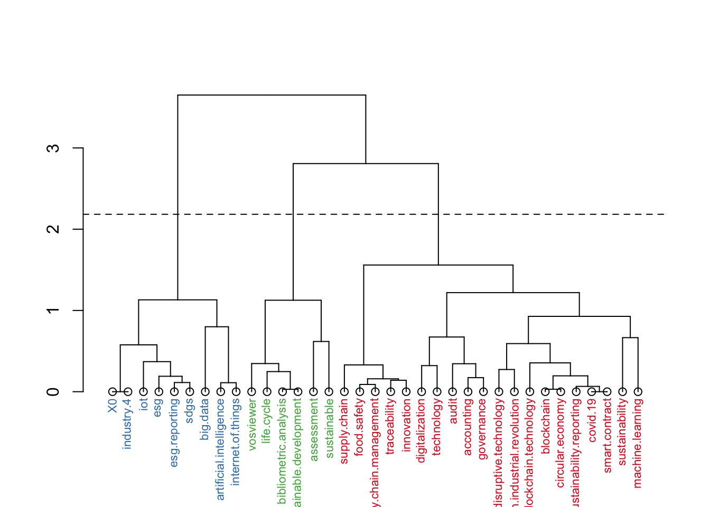
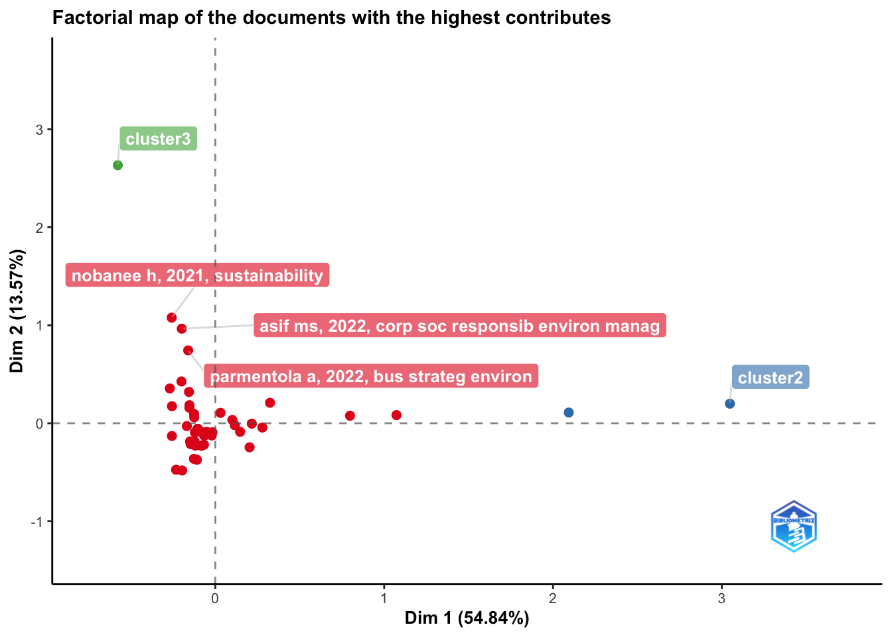
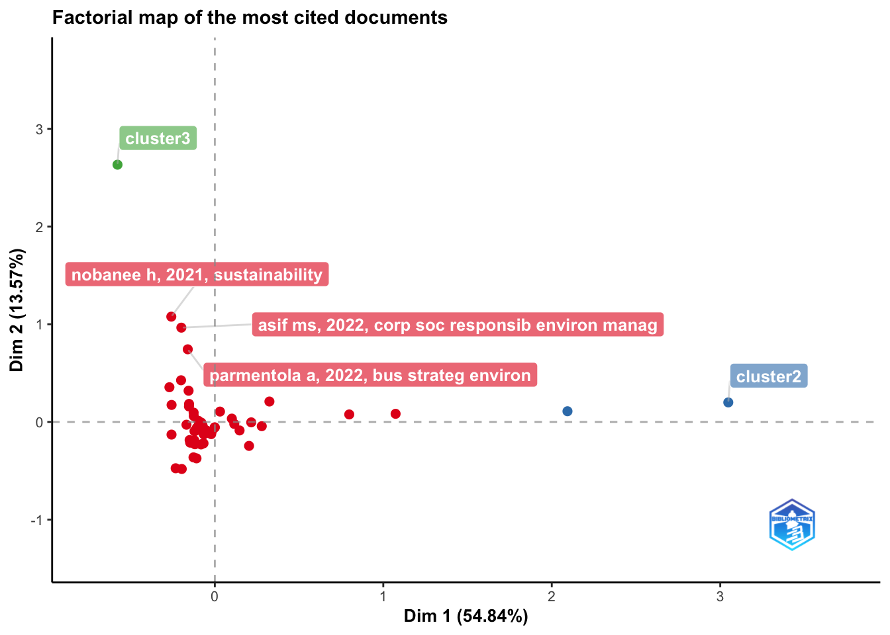

Converting your isi collection into a bibliographic dataframe
Done!
Generating affiliation field tag AU_UN from C1: Done!Blockchain and sustainability reporting
Sample analysis
Results from this link
Clarivate Analytics WoS
Summarize main results of the bibliometric analysis

Countries collaborating on this set of bibliographic data

main bibliometric measures
summarize main results of the bibliometric analysis
MAIN INFORMATION ABOUT DATA
Timespan 2018 : 2023
Sources (Journals, Books, etc) 41
Documents 62
Annual Growth Rate % 10.76
Document Average Age 1.84
Average citations per doc 22.89
Average citations per year per doc 6.322
References 4000
DOCUMENT TYPES
article 42
article; early access 3
proceedings paper 8
review 8
review; early access 1
DOCUMENT CONTENTS
Keywords Plus (ID) 185
Author's Keywords (DE) 296
AUTHORS
Authors 217
Author Appearances 227
Authors of single-authored docs 4
AUTHORS COLLABORATION
Single-authored docs 4
Documents per Author 0.286
Co-Authors per Doc 3.66
International co-authorships % 48.39
Annual Scientific Production
Year Articles
2018 3
2019 3
2020 10
2021 13
2022 24
2023 5
Annual Percentage Growth Rate 10.76
Most Productive Authors
Authors Articles Authors Articles Fractionalized
1 ALOFI A 2 SUNMOLA FT 1.333
2 AZIZI N 2 SON-TURAN S 1.000
3 BAHSOON R 2 TORRES VM 1.000
4 HAASS O 2 YOON S 1.000
5 HENDLEY R 2 TISCINI R 0.667
6 KUMAR S 2 ALOFI A 0.583
7 LIU Z 2 AZIZI N 0.583
8 SINGH A 2 BAHSOON R 0.583
9 SUNMOLA FT 2 HAASS O 0.583
10 TISCINI R 2 HENDLEY R 0.583
Top manuscripts per citations
Paper DOI TC TCperYear NTC
1 ESMAEILIAN B, 2020, RESOUR CONSERV RECYCL 10.1016/j.resconrec.2020.105064 187 46.75 3.117
2 MOSAVI A, 2019, ENERGIES 10.3390/en12071301 185 37.00 2.569
3 VENKATESH VG, 2020, ROBOT COMPUT-INTEGR MANUF 10.1016/j.rcim.2019.101896 136 34.00 2.267
4 DI VAIO A, 2020, INT J INF MANAGE 10.1016/j.ijinfomgt.2019.09.010 133 33.25 2.217
5 SYLIM P, 2018, JMIR RES PROTOC 10.2196/10163 95 15.83 1.619
6 JAMWAL A, 2021, APPL SCI-BASEL 10.3390/app11125725 62 20.67 2.963
7 GAUSDAL AH, 2018, SUSTAINABILITY 10.3390/su10061985 58 9.67 0.989
8 GHOSH A, 2021, ENG CONSTR ARCHIT MANAG 10.1108/ECAM-04-2020-0271 55 18.33 2.629
9 KUMAR S, NA, ANN OPER RES 10.1007/s10479-021-04410-8 42 NA 3.500
10 PARMENTOLA A, 2022, BUS STRATEG ENVIRON 10.1002/bse.2882 40 20.00 8.972
Corresponding Author's Countries
Country Articles Freq SCP MCP MCP_Ratio
1 UNITED KINGDOM 10 0.1613 4 6 0.600
2 ITALY 8 0.1290 6 2 0.250
3 CHINA 7 0.1129 3 4 0.571
4 AUSTRALIA 5 0.0806 2 3 0.600
5 USA 4 0.0645 2 2 0.500
6 INDIA 3 0.0484 1 2 0.667
7 KOREA 3 0.0484 3 0 0.000
8 GERMANY 2 0.0323 0 2 1.000
9 NEW ZEALAND 2 0.0323 1 1 0.500
10 SPAIN 2 0.0323 2 0 0.000
SCP: Single Country Publications
MCP: Multiple Country Publications
Total Citations per Country
Country Total Citations Average Article Citations
1 ITALY 302 37.8
2 USA 293 73.2
3 VIETNAM 185 185.0
4 NEW ZEALAND 136 68.0
5 UNITED KINGDOM 78 7.8
6 CHINA 71 10.1
7 AUSTRALIA 68 13.6
8 U ARAB EMIRATES 65 32.5
9 NORWAY 58 58.0
10 INDIA 43 14.3
Most Relevant Sources
Sources Articles
1 SUSTAINABILITY 21
2 FOODS 2
3 2021 IEEE INTERNATIONAL CONFERENCE ON WEB SERVICES ICWS 2021 1
4 2022 17TH IBERIAN CONFERENCE ON INFORMATION SYSTEMS AND TECHNOLOGIES (CISTI) 1
5 ACCOUNTING AUDITING \\& ACCOUNTABILITY JOURNAL 1
6 ACCOUNTING PERSPECTIVES 1
7 ANNALS OF OPERATIONS RESEARCH 1
8 APPLIED SCIENCES-BASEL 1
9 BUSINESS INFORMATION SYSTEMS WORKSHOPS BIS 2021 1
10 BUSINESS STRATEGY AND THE ENVIRONMENT 1
Most Relevant Keywords
Author Keywords (DE) Articles Keywords-Plus (ID) Articles
1 BLOCKCHAIN 36 TECHNOLOGY 17
2 SUSTAINABILITY 17 MANAGEMENT 13
3 BLOCKCHAIN TECHNOLOGY 6 BLOCKCHAIN 8
4 SUPPLY CHAIN 6 CHALLENGES 8
5 ARTIFICIAL INTELLIGENCE 4 FRAMEWORK 7
6 BIBLIOMETRIC ANALYSIS 4 PERFORMANCE 6
7 BIG DATA 4 IMPACT 5
8 SUSTAINABILITY REPORTING 4 BIG DATA 4
9 TRACEABILITY 4 CONSUMPTION 4
10 0 3 FUTURE 4$MainInformation
[1] "\n\nMAIN INFORMATION ABOUT DATA\n\n" "Timespan 2018 : 2023 \n"
[3] "Sources (Journals, Books, etc) 41 \n" "Documents 62 \n"
[5] "Annual Growth Rate % 10.76 \n" "Document Average Age 1.84 \n"
[7] "Average citations per doc 22.89 \n" "Average citations per year per doc 6.322 \n"
[9] "References 4000 \n" "\nDOCUMENT TYPES \n"
[11] "article 42 \n" "article; early access 3 \n"
[13] "proceedings paper 8 \n" "review 8 \n"
[15] "review; early access 1 \n" "\nDOCUMENT CONTENTS\n"
[17] "Keywords Plus (ID) 185 \n" "Author's Keywords (DE) 296 \n"
[19] "\nAUTHORS\n" "Authors 217 \n"
[21] "Author Appearances 227 \n" "Authors of single-authored docs 4 \n"
[23] "\nAUTHORS COLLABORATION\n" "Single-authored docs 4 \n"
[25] "Documents per Author 0.286 \n" "Co-Authors per Doc 3.66 \n"
[27] "International co-authorships % 48.39 \n" "\n"
$MainInformationDF
Description Results
1 MAIN INFORMATION ABOUT DATA
2 Timespan 2018:2023
3 Sources (Journals, Books, etc) 41
4 Documents 62
5 Annual Growth Rate % 10.76
6 Document Average Age 1.84
7 Average citations per doc 22.89
8 Average citations per year per doc 6.322
9 References 4000
10 DOCUMENT TYPES
11 article 42
12 article; early access 3
13 proceedings paper 8
14 review 8
15 review; early access 1
16 DOCUMENT CONTENTS
17 Keywords Plus (ID) 185
18 Author's Keywords (DE) 296
19 AUTHORS
20 Authors 217
21 Author Appearances 227
22 Authors of single-authored docs 4
23 AUTHORS COLLABORATION
24 Single-authored docs 4
25 Documents per Author 0.286
26 Co-Authors per Doc 3.66
27 International co-authorships % 48.39
28
$AnnualProduction
Year Articles
1 2018 3
2 2019 3
3 2020 10
4 2021 13
5 2022 24
6 2023 5
$AnnualGrowthRate
[1] 10.76
$MostProdAuthors
Authors Articles Authors Articles Fractionalized
1 ALOFI A 2 SUNMOLA FT 1.333
2 AZIZI N 2 SON-TURAN S 1.000
3 BAHSOON R 2 TORRES VM 1.000
4 HAASS O 2 YOON S 1.000
5 HENDLEY R 2 TISCINI R 0.667
6 KUMAR S 2 ALOFI A 0.583
7 LIU Z 2 AZIZI N 0.583
8 SINGH A 2 BAHSOON R 0.583
9 SUNMOLA FT 2 HAASS O 0.583
10 TISCINI R 2 HENDLEY R 0.583
$MostCitedPapers
Paper DOI TC TCperYear NTC
1 ESMAEILIAN B, 2020, RESOUR CONSERV RECYCL 10.1016/j.resconrec.2020.105064 187 46.75 3.117
2 MOSAVI A, 2019, ENERGIES 10.3390/en12071301 185 37.00 2.569
3 VENKATESH VG, 2020, ROBOT COMPUT-INTEGR MANUF 10.1016/j.rcim.2019.101896 136 34.00 2.267
4 DI VAIO A, 2020, INT J INF MANAGE 10.1016/j.ijinfomgt.2019.09.010 133 33.25 2.217
5 SYLIM P, 2018, JMIR RES PROTOC 10.2196/10163 95 15.83 1.619
6 JAMWAL A, 2021, APPL SCI-BASEL 10.3390/app11125725 62 20.67 2.963
7 GAUSDAL AH, 2018, SUSTAINABILITY 10.3390/su10061985 58 9.67 0.989
8 GHOSH A, 2021, ENG CONSTR ARCHIT MANAG 10.1108/ECAM-04-2020-0271 55 18.33 2.629
9 KUMAR S, NA, ANN OPER RES 10.1007/s10479-021-04410-8 42 NA 3.500
10 PARMENTOLA A, 2022, BUS STRATEG ENVIRON 10.1002/bse.2882 40 20.00 8.972
$MostProdCountries
Country Articles Freq SCP MCP MCP_Ratio
1 UNITED KINGDOM 10 0.1613 4 6 0.600
2 ITALY 8 0.1290 6 2 0.250
3 CHINA 7 0.1129 3 4 0.571
4 AUSTRALIA 5 0.0806 2 3 0.600
5 USA 4 0.0645 2 2 0.500
6 INDIA 3 0.0484 1 2 0.667
7 KOREA 3 0.0484 3 0 0.000
8 GERMANY 2 0.0323 0 2 1.000
9 NEW ZEALAND 2 0.0323 1 1 0.500
10 SPAIN 2 0.0323 2 0 0.000
$TCperCountries
Country Total Citations Average Article Citations
1 ITALY 302 37.8
2 USA 293 73.2
3 VIETNAM 185 185.0
4 NEW ZEALAND 136 68.0
5 UNITED KINGDOM 78 7.8
6 CHINA 71 10.1
7 AUSTRALIA 68 13.6
8 U ARAB EMIRATES 65 32.5
9 NORWAY 58 58.0
10 INDIA 43 14.3
$MostRelSources
Sources Articles
1 SUSTAINABILITY 21
2 FOODS 2
3 2021 IEEE INTERNATIONAL CONFERENCE ON WEB SERVICES ICWS 2021 1
4 2022 17TH IBERIAN CONFERENCE ON INFORMATION SYSTEMS AND TECHNOLOGIES (CISTI) 1
5 ACCOUNTING AUDITING \\& ACCOUNTABILITY JOURNAL 1
6 ACCOUNTING PERSPECTIVES 1
7 ANNALS OF OPERATIONS RESEARCH 1
8 APPLIED SCIENCES-BASEL 1
9 BUSINESS INFORMATION SYSTEMS WORKSHOPS BIS 2021 1
10 BUSINESS STRATEGY AND THE ENVIRONMENT 1
$MostRelKeywords
Author Keywords (DE) Articles Keywords-Plus (ID) Articles
1 BLOCKCHAIN 36 TECHNOLOGY 17
2 SUSTAINABILITY 17 MANAGEMENT 13
3 BLOCKCHAIN TECHNOLOGY 6 BLOCKCHAIN 8
4 SUPPLY CHAIN 6 CHALLENGES 8
5 ARTIFICIAL INTELLIGENCE 4 FRAMEWORK 7
6 BIBLIOMETRIC ANALYSIS 4 PERFORMANCE 6
7 BIG DATA 4 IMPACT 5
8 SUSTAINABILITY REPORTING 4 BIG DATA 4
9 TRACEABILITY 4 CONSUMPTION 4
10 0 3 FUTURE 4most frequent cited manuscripts
[,1]
SABERI S, 2019, INT J PROD RES, V57, P2117, DOI 10.1080/00207543.2018.1533261 13
SWAN M., 2015, BLOCKCHAIN BLUEPRINT 9
DAI J, 2017, J INF SYST, V31, P5, DOI 10.2308/ISYS-51804 7
LANSITI M, 2017, HARVARD BUS REV, V95, P119 7
YADAV S, 2020, RESOUR CONSERV RECY, V152, DOI 10.1016/J.RESCONREC.2019.104505 7
KOKINA J, 2017, J EMERG TECHNOL ACCO, V14, P91, DOI 10.2308/JETA-51911 6
KSHETRI N, 2018, INT J INFORM MANAGE, V39, P80, DOI 10.1016/J.IJINFOMGT.2017.12.005 6
WANG YL, 2019, SUPPLY CHAIN MANAG, V24, P62, DOI 10.1108/SCM-03-2018-0148 6
YLI-HUUMO J, 2016, PLOS ONE, V11, DOI 10.1371/JOURNAL.PONE.0163477 6
ZHENG ZB, 2018, INT J WEB GRID SERV, V14, P352, DOI 10.1504/IJWGS.2018.095647 6most frequent cited first authors
[,1]
NAKAMOTO S 17
DELOITTE 15
SABERI S 15
CHOI TM 14
EUROPEAN COMMISSION 12
PWC 12
SWAN M 11
WANG YL 11
ZHENG ZB 11most frequent local cited authors
Author LocalCitations
28 BAKARICH KM 3
39 CASTONGUAY JJ 3
142 O'BRIEN PE 3
55 DE 1
70 FELICE F 1
150 PARMENTOLA A 1
155 PETRILLO A 1
198 TUTORE I 1
1 ABDULAZIZ FA 0
2 ABDULLAH FB 0most frequent local cited papers
Paper
7 BAKARICH KM, 2020, ACCOUNT PERSPECT
31 PARMENTOLA A, 2022, BUS STRATEG ENVIRON
1 GOKALP E, 2018, INFORMATION SYSTEMS: RESEARCH, DEVELOPMENT, APPLICATIONS, EDUCATION (11TH SIGSAND/PLAIS EUROSYMPOSIUM 2018)
2 GAUSDAL AH, 2018, SUSTAINABILITY
3 SYLIM P, 2018, JMIR RES PROTOC
4 ABDULLAH T, 2019, PROCEEDINGS OF 2019 IEEE 12TH INTERNATIONAL CONFERENCE ON GLOBAL SECURITY, SAFETY AND SUSTAINABILITY (ICGS3-2019)
5 VIOLINO S, 2019, FOODS
6 MOSAVI A, 2019, ENERGIES
8 VENKATESH VG, 2020, ROBOT COMPUT-INTEGR MANUF
9 ESMAEILIAN B, 2020, RESOUR CONSERV RECYCL
DOI Year LCS GCS
7 10.1111/1911-3838.12241 2020 3 11
31 10.1002/bse.2882 2022 1 40
1 10.1007/978-3-030-00060-8\\_13 2018 0 23
2 10.3390/su10061985 2018 0 58
3 10.2196/10163 2018 0 95
4 2019 0 1
5 10.3390/foods8110529 2019 0 30
6 10.3390/en12071301 2019 0 185
8 10.1016/j.rcim.2019.101896 2020 0 136
9 10.1016/j.resconrec.2020.105064 2020 0 187Authors’ Dominance ranking
Author Dominance Factor Tot Articles Single-Authored Multi-Authored First-Authored Rank by Articles Rank by DF
1 ALOFI A 1.0 2 0 2 2 1 1
2 LIU Z 1.0 2 0 2 2 1 1
3 SUNMOLA FT 1.0 2 1 1 1 1 1
4 ABDULLAH FB 1.0 1 0 1 1 6 1
5 ABDULLAH T 1.0 1 0 1 1 6 1
6 ALEX BS 1.0 1 0 1 1 6 1
7 ASIF MS 1.0 1 0 1 1 6 1
8 BAKARICH KM 1.0 1 0 1 1 6 1
9 KUMAR S 0.5 2 0 2 1 1 9
10 TISCINI R 0.5 2 0 2 1 1 9H index for ALOFI A
Bornmann’s impact indices
Element h_index g_index m_index TC NP PY_start
1 ALOFI A 1 1 0.3333333 2 2 2021Citation list
$`ALOFI A`
AU
ALOFI A, 2022, IEEE TRANS SUSTAIN COMPUT ALOFI A;BOKHARI MA;BAHSOON R;HENDLEY R
ALOFI A, 2021, 2021 IEEE INTERNATIONAL CONFERENCE ON WEB SERVICES, ICWS 2021 ALOFI A;BAHSOON R;HENDLEY R
SO
ALOFI A, 2022, IEEE TRANS SUSTAIN COMPUT IEEE TRANSACTIONS ON SUSTAINABLE COMPUTING
ALOFI A, 2021, 2021 IEEE INTERNATIONAL CONFERENCE ON WEB SERVICES, ICWS 2021 2021 IEEE INTERNATIONAL CONFERENCE ON WEB SERVICES, ICWS 2021
PY TC DI
ALOFI A, 2022, IEEE TRANS SUSTAIN COMPUT 2022 1 10.1109/TSUSC.2022.3160491
ALOFI A, 2021, 2021 IEEE INTERNATIONAL CONFERENCE ON WEB SERVICES, ICWS 2021 2021 1 10.1109/ICWS53863.2021.00100Top-Authors’ Productivity over the Time
Element h_index g_index m_index TC NP PY_start
1 ALOFI A 1 1 0.3333333 2 2 2021
2 AZIZI N 2 2 0.6666667 12 2 2021
3 BAHSOON R 1 1 0.3333333 2 2 2021
4 HAASS O 2 2 0.6666667 12 2 2021
5 HENDLEY R 1 1 0.3333333 2 2 2021
6 KUMAR S 1 2 NA 42 2 NA
7 LIU Z 1 2 0.3333333 28 2 2021
8 SUNMOLA FT 1 2 0.3333333 12 2 2021
9 TISCINI R 2 2 0.5000000 35 2 2020Top local authors and Author’s productivity per year

Author year freq TC TCpY
1 ABDULAZIZ FA 2021 1 37 12.3333333
2 ALOFI A 2021 1 1 0.3333333
3 ALOFI A 2022 1 1 0.5000000
4 AZIZI N 2021 1 9 3.0000000
5 AZIZI N 2022 1 3 1.5000000
6 BAHSOON R 2021 1 1 0.3333333Conceptual structure map of a scientific field (based on Author’s keywords)



